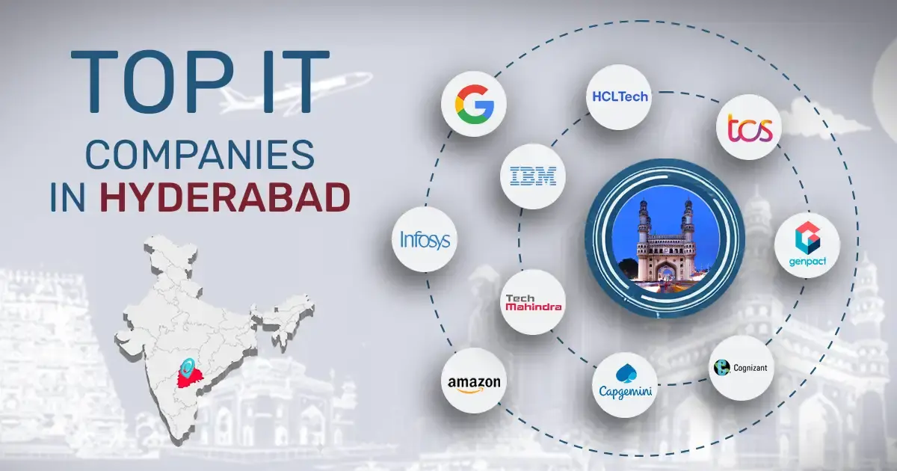

Built In

Hyderabad’s IT landscape is dominated by a mix of massive tech multinationals and giant IT service providers. Top employers include Microsoft India Development Center and Amazon Development Center India, alongside IT service powerhouses like TCS and Infosys, most of which are concentrated in the HITEC City and Gachibowli areas.
contact
buit in: Plot No 1, Deccan Park, Software Units Layout, Madhapur. Phone: +91 40 6667 2000. Explore openings via the TCS Careers page.